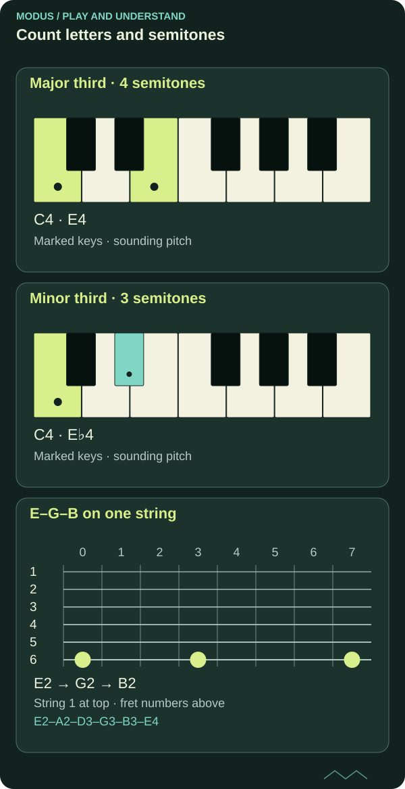

Notes and intervals: the building blocks of music
You do not need to know every name before you start playing. Begin with the distance between two notes – and listen to what it does to the music.

One note is a starting point
Play E. Then play another note. What you hear between them is an interval. It may feel narrow or wide, settled or tense. The experience depends on timbre, register and musical context.
On guitar, one fret is a semitone. On piano, a semitone is the distance to the nearest key, whether white or black. E to F and B to C are semitones even though both keys are white.

Read the diagram as text
- Major third · 4 semitones: C4 → E4
- Minor third · 3 semitones: C4 → E♭4
- E–G–B on one string: string 6, fret 0: E2; string 6, fret 3: G2; string 6, fret 7: B2
From semitones to intervals
Two semitones make a whole tone. C to D is two semitones. C to E is four semitones: a major third. C to E♭ is three semitones: a minor third.
| From C to | Interval | Semitones |
|---|---|---|
| D | Major second | 2 |
| E♭ | Minor third | 3 |
| E | Major third | 4 |
| G | Perfect fifth | 7 |
| C, an octave higher | Perfect octave | 12 |
Counting semitones provides a useful map, but it is not always enough to find an interval's full name. We also need to look at the letter names.
From C to F, we count four letter names: C–D–E–F. That makes a fourth. From C to G, we count five: C–D–E–F–G. That makes a fifth. Both notes are included in the count.
Next, we use the number of semitones to determine the interval quality. C–F♯ spans six semitones and is an augmented fourth. C–G♭ also spans six semitones, but is a diminished fifth.
On a standard piano using equal temperament, these intervals sound the same when played in the same register. However, they are written differently and can serve different roles in music.
Remember two questions: How many letter names does the interval span, and how many semitones separate the notes?
Listen before memorising
First play the notes in succession. You hear the interval as a melodic movement. Then play them together to hear it as a harmony.
Start with just two intervals, such as minor and major thirds. Compare them from the same root. The aim is to recognise a difference you can use, rather than collect as many names as possible at once.
Describe what you play
Choose one guitar string and play E–G–B. E to G spans three semitones, a minor third. G to B spans four semitones, a major third. E to B spans seven semitones, a perfect fifth. You are examining the same three notes from different starting points.
Then play the notes on a piano or across several strings. The intervals depend on the pitches, not on the appearance of the shape. First explain which interval you expect, then check it on the instrument.
FROM READING TO PLAYING
Try it yourself.
Play C–E and C–E♭ slowly, first in succession and then together. Sing the upper note before playing it. Repeat from D and E.
Explore intervals with a grand pianoCHECK YOUR UNDERSTANDING
What do you remember?
Three questions about what you have read. Get all three right to complete the quiz. Try as many times as you like.
Completion is saved in this browser and shared between Norwegian and English.
You answered all three questions correctly. Take the idea to your instrument.
Next article · Major and minor: one note makes the difference Back to the article library ↗︎